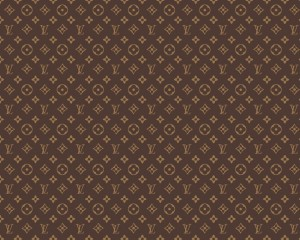

Познакомимся поближе
Louis Vuitton ( Луи́ Витто́н) – один из старейших французских Модных домов, специализирующийся на производстве мужской, женской и детской одежды, обуви и аксессуаров люксового сегмента, а также ювелирных изделий. Визитной карточкой бренда являются чемоданы.
Создатель бренда
Луи Вюиттон
Происхождение
Луи Вюиттон родился в 1821 году во Франш-Конте. В детстве научился пользоваться инструментами своего отца, который был столяром. В 14 лет Луи решил попытать счастья в Париже, куда отправился пешком; ему пришлось пройти 400 километров, отделявших его от столицы. В 1837 году поступил учеником к мастеру по изготовлению сундуков и стал делать дорожные сундуки.
История успеха
Чемоданов в современном понимании тогда ещё не существовало, таким образом, Луи Вюиттон, придумав их, совершил прорыв в этом деле, совпавший с развитием железнодорожного транспорта и круизных лайнеров, когда люди стали активнее перемещаться.
В 1858 году Луи представил новинку – плоский чемодан, который получил название «Trianon». Отличительной особенностью модели стала ее плоская форма. До этого момента все чемоданы производились с выпуклой крышкой, что осложняло их транспортировку, поскольку складывать их было неудобно. Чемодан был обтянут серой непромокаемой тканью, имел основание из древесины тополя, а его края были защищены от сбивания металлическими уголками.
Луи Вюиттон также изобрел круглую сумку для шофера (её размещали в отверстии запасного колеса), нетонущий чемодан на воздушной подушке и кофр-секретер, который можно было использовать как письменный стол.
А что же было дальше?
После смерти Луи его дело было продолжено потомками.В 1895 году дизайнеры компании под руководством Жоржа Виттона разработали легендарное полотно с монограммами, которые было очень трудно скопировать. Жорж создал новый мотив, который состоял из бежевого круга, содержащего четырехлистный цветок, изогнутого бежевого ромба с четырехлучевой звездой и точкой в центре, инициалов «LV» в память о своем отце. Изображение было запатентовано и впоследствии стало фирменным знаком Louis Vuitton. Благодаря этому в мире значительно снизился процент подделок продукции Louis Vuitton.

На протяжении многих лет Жорж занимался продвижением продукции Louis Vuitton на международном рынке, много путешествовал и постоянно переезжал из страны в страну. Вскоре магазины марки Louis Vuitton появились в Нью-Йорке, Бомбее, Лондоне, Вашингтоне, Александрии и Буэнос-Айресе.
Louis Vuitton в ХХ веке
В 1914 году на Елисейских Полях в Париже был открыт бутик Louis Vuitton, который стал самым большим магазином в городе.
В 1930 году была выпущена сенсационная мягкая сумка-чемодан Keepall. Новшество стало главной предпосылкой появления уникальной модели сумки Speedy, появившейся в 1932 году и впоследствии получившей статус культовой.
В 1936 году Жорж Виттон скончался, управление Louis Vuitton полностью перешло в руки его сына Гастона-Луи Виттона.
Во время Второй Мировой войны торговая марка Louis Vuitton поддержала нацистов, повесив на двери вывеску:
«Нет входа с собаками. Нет входа евреям».
Эту позорную страницу в истории бренда постарались быстро забыть.
В 1959 году было принято решение изменить знаменитую монограмму на более простую. Сделано это было для того, чтобы наносить ее не только на крупные, но и на более мелкие объекты, например, на аксессуары.
В 1978 году открылся первый бутик Louis Vuitton в Японии. С этого момента торговая марка стала расширять свое влияние в Азии. Позднее фирменные бутики были открыты в Тайване (1983 г.) и в Южной Корее (1984 г.).
В 1987 году бренд Louis Vuitton стал частью холдинга LVMH (Louis Vuitton Moet Hennessy), который является одним из самых крупных в мире производителей предметов роскоши.
В 1989 году компания Louis Vuitton располагала ста тридцатью бутиками по всему миру.
Louis Vuitton сейчас
Louis Vuitton — это компания с богатой историей и неповторимой индивидуальностью. Она снова и снова доказывает свою способность адаптироваться и развиваться в соответствии с потребностями и желаниями современной аудитории, но при этом она чтит свое уникальное наследие. Модный дом объединяется с молодыми талантливыми дизайнерами, которые придают свежий взгляд классическим изделиям бренда. Также компания активно сотрудничает с мировыми знаменитостями, которые являются иконами для многих молодых людей (имя бренда упоминалось в песнях таких рэперов, как Канье Уэст, Juicy J и Wiz Khalifa).
Все это способствует увеличению количества новых потребителей и является причиной того, как бренду со 160 летней историей до сих пор удается оставаться на вершине.